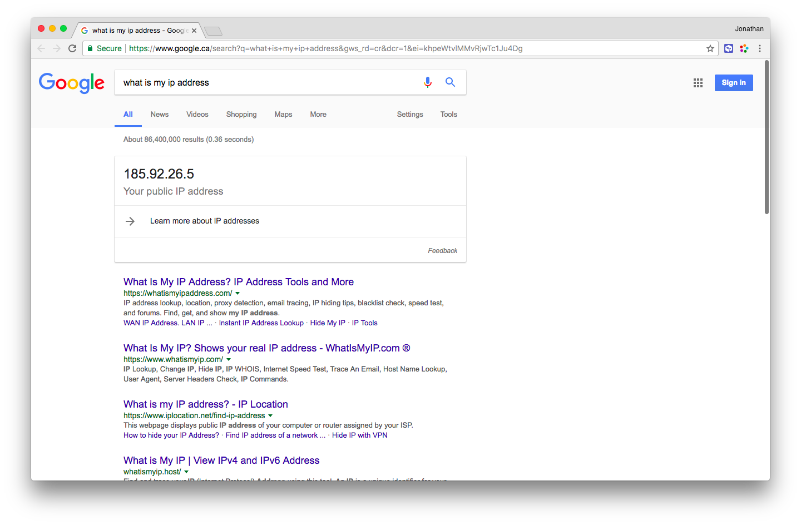

Using Tabula on your Digital Ocean or AWS EC2 server
Running Tabula on a server - whether it’s a Digital Ocean server or an AWS/EC2 server - is pretty easy, and allows you a lot of flexibility to might otherwise not have.
When you run Tabula on your own computer, you’re running a “local server”, a.k.a. your computer becomes a server. This makes it easy to adapt to run on a real server! But why would you want to do that?
Need extra RAM for Tabula but don’t want to buy a new computer? If you run a Digital Ocean or AWS server, you can have all the RAM you want!
Trying to teach a class but not everyone has permissions to run or install Tabula on their machine? If you run a Digital Ocean or AWS server, you can create one server that everyone can use!
Create your server
Create a new server using Ubuntu. I’m only using 1GB of RAM in the example below, but having more RAM is always better.
If you need help creating a new server, read my documentation on creating and setting up a Digital Ocean server. If you’re using AWS/EC2, that’s okay, the rest of this will be more or less the same.
Connect to your server
Use SSH to connect to your server as the root user. When I connect give the server a specific SSH key to use, which is the -i ~/.ssh/do-droplet part.
ssh -i ~/.ssh/do-droplet root@12.34.56.78
Instead of 12.34.56.78 you’ll use the IP address of your server. Mine in this case is 104.131.31.81.
When it tells you “The authenticity of host ‘12.34.56.78 (12.34.56.78)’ can’t be established” just type “yes” - your computer is just warning you it hasn’t seen the server before and wants to know if you can trust it.
Setting up the server
Once you’re connected, you’ll want to download and unzip Tabula. We’re specifically using the 1.1.1 release here, although by the time you read this a newer version might be out. We’re also installing the unzip utility because it doesn’t automatically come with the server.
wget https://github.com/tabulapdf/tabula/releases/download/v1.1.1/tabula-jar-1.1.1.zip
apt install unzip
unzip tabula-jar-1.1.1.zip
Installing java on the server
Tabula is a Java application, which means we need to install Java on the server. Install it with
apt install default-jre
JRE stands for Java Runtime Enviroment. It will ask if you really want to install it (yes!) and take a little time to download and install all of the pieces.
If you get the message
Error: Could not find the 'java' executable at '', are you sure your JAVA_HOME environment variable is pointing to a proper java installation?when trying to run Tabula later, Java was not successfully installed.
Running Tabula
Now we’ll want to tell the java command to go find the tabula.jar program inside of the tabula directory and to run it.
java -Dfile.encoding=utf-8 -Xms256M -Xmx1024M -jar tabula/tabula.jar
Give it a minute to warm up, and you’ll see something like the following:
============================================================
http://127.0.0.1:8080
============================================================
should we open browser?
java.lang.Boolean.getBoolean('tabula.openBrowser'): false
======================================================
Server now listening at: http://127.0.0.1:8080
You may now open a web browser to the above URL.
When you're done using the Tabula interface, you may
return to this window and press "Control-C" to close it.
======================================================
2018-01-16 15:20:40.099:INFO:oejsh.ContextHandler:main: Started o.e.j.w.WebAppContext@27ddd392{/,file:/tmp/jetty-0.0.0.0-8080-tabula.jar-_-any-4252256658897739382.dir/webapp/,AVAILABLE}{file:/root/tabula/tabula.jar}
2018-01-16 15:20:40.100:WARN:oejsh.RequestLogHandler:main: !RequestLog
2018-01-16 15:20:40.161:INFO:oejs.ServerConnector:main: Started ServerConnector@631c89a7{HTTP/1.1}{0.0.0.0:8080}
2018-01-16 15:20:40.167:INFO:oejs.Server:main: Started @32233ms
That means you’re ready to go! Connect to Tabula by visiting http://104.131.31.81:8080/ in your web browser - but with your server’s IP address, not mine. The 8080 is the port you’re connected to. A port is just a different door you go through.
Shutting down the server
To stop your server, hold the Control key and press C (aka press Ctrl+C).
SECURITY WARNING
Right now, everyone in the world connect to your server. They can read your Tabula data, they can upload PDFs, they can do anything! It isn’t secure. This might not matter to you, but it’s easy to fix.
To fix this, we’re going to set up a firewall rule to say hey, only accept connections to port 8080 from my computer. It only takes two quick steps.
Step 1: Find out your IP address
Not your server’s IP address, your own IP address. You can just type “what is my IP address?” into Google and it will tell you. In this example, mine is 185.92.26.5.

We want to tell the server to only accept port 8080 connections from 185.92.26.5.
Step 2: Add an iptables rule
iptables is the command you use to update firewall rules on your server. If you’re currently running Tabula on your server, stop it by pressing Ctrl+C.
Now we’re going to say “only accept connections from my computer’s IP (185.92.26.5) for port 8080” (be sure to use your computer’s IP address, not mine!). Run the following command, replacing my IP address - 185.92.26.5 - with yours:
iptables -A INPUT -p tcp -s 185.92.26.5 --dport 8080 -j ACCEPT
iptables -A INPUT -p tcp -s 0.0.0.0/0 --dport 8080 -j DROP
The first command allows connections from 185.92.26.5 (ACCEPT), and the second command blocks them from every other IP (0.0.0.0/0, DROP).
Step 3: Run Tabula again
Now you need to run Tabula again with the same command as before
java -Dfile.encoding=utf-8 -Xms256M -Xmx1024M -jar tabula/tabula.jar
If you messed something up
Did you mess something up? Can you not connect any more? Undo your changes to iptables by running the following two commands on your server:
iptables -X
iptables -F
Running the server after you’ve disconnected
If you’d like to keep your server running after you’ve disconnected, you need to run it in the background, and make sure it doesn’t stop when you disconnect. To do this, we add two pieces to our tabula command.
nohupis going to keep Tabula running after you disconnect&is going to run Tabula in the background
nohup java -Dfile.encoding=utf-8 -Xms256M -Xmx1024M -jar tabula/tabula.jar &
Now you can type exit to leave your server but still be able to access it through the web. If it isn’t working yet, be sure to wait a few minutes for Tabula to start before you panic!
Stopping Tabula if it’s running in the background
Connect to the server, and run this command to stop Tabula
killall java
This will tell all java programs to exit (you’re hopefully only running Tabula!).